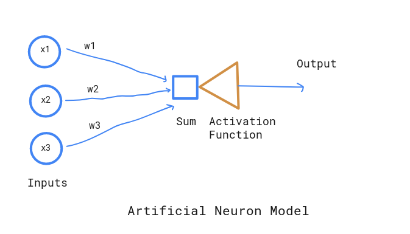

What is Deep Learning and Neural Network?
Deep learning, in simpler version is a learning mechanisms for Neural networks. And, Neural networks are computational model mimicing human nervous system which are capable of learning. Like interconnected neurons in human brains, the neural network is also connected by different nodes. It receives signals as a set of inputs, perform calcuations and signals output based on some activation value.

Here are some list of problems, that deep learning can solve
- Classification : object and speech recongnistion, classify sentiments from text
- Clustering : Fraud detection
Elements of Neural Networks
-
Weights Biological neurons has synaptic strengths to define the importance of particular inputs. In the similar fashion, inputs to NNs have associated relative weights. These weights ultimately defines the connection intensity of the input to any neuron. These weights are adaptive in nature since they will be modified in the process of training.
-
Summation This is the first step in NN, where each input is multiplied by its corresponding weight and weighted sum is computed.
-
Transfer In the transfer process, we simply compare the summation output with threshold value and decide the final neural output.
An example would be,
inputs
(x1) = 2
(x2) = 1
weights
(w1) = 0.7
(w2) = 0.8
threshold = 2
Summation value :
x1w1 + x2w2 = (2 x 0.7) + (1 x 0.8) = 2.2
Since summation value is greather than threshold, neuron will be fired.